01 · 工作台核心闭环
先呈现待处理运行、认证问题与证据缺口，再看趋势；从异常直接进入对应 Run 或 Session。
查看原始 PNG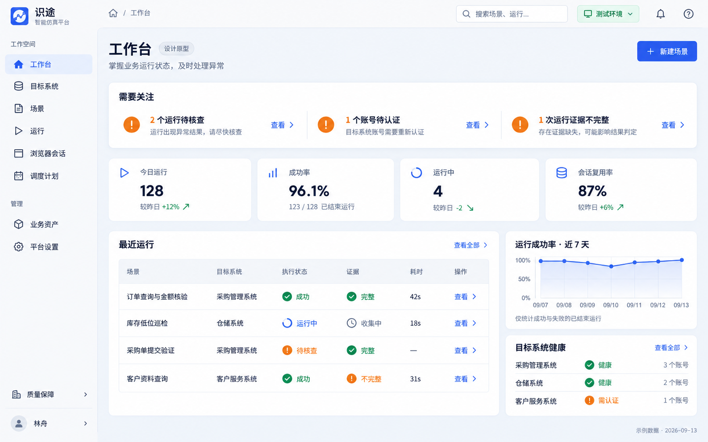
02 · 目标系统与账号核心闭环
用目标系统组织场景、目标账号和会话策略；详情侧栏分别呈现连接、认证与运行可用性。
查看原始 PNG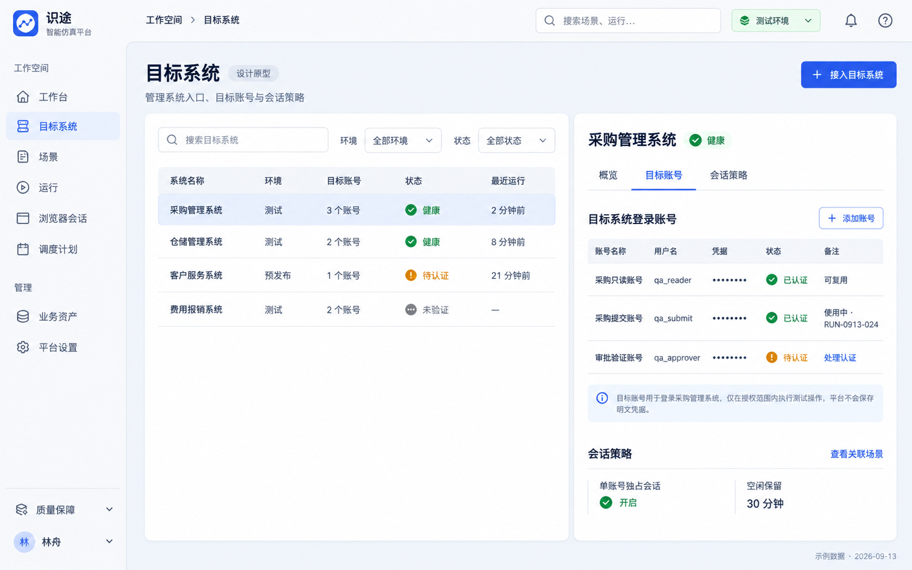
03 · 场景库核心闭环
场景列表同时暴露绑定目标、已发布版本和草稿；录制、手工、AI、导入作为同一场景的创建入口。
查看原始 PNG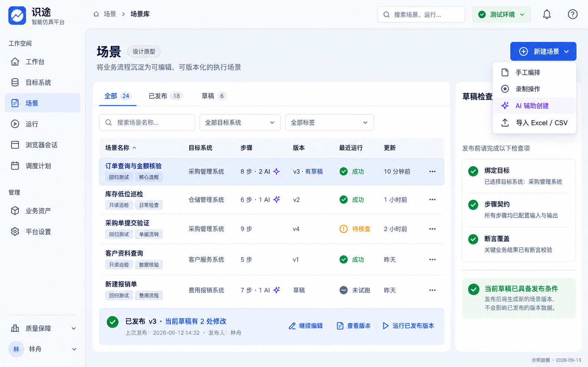
04 · Scenario Studio 顺序编排核心闭环
左侧步骤库、中间有序步骤、右侧属性、底部试跑证据；确定性与 AI 步骤使用同一套编辑结构。
查看原始 PNG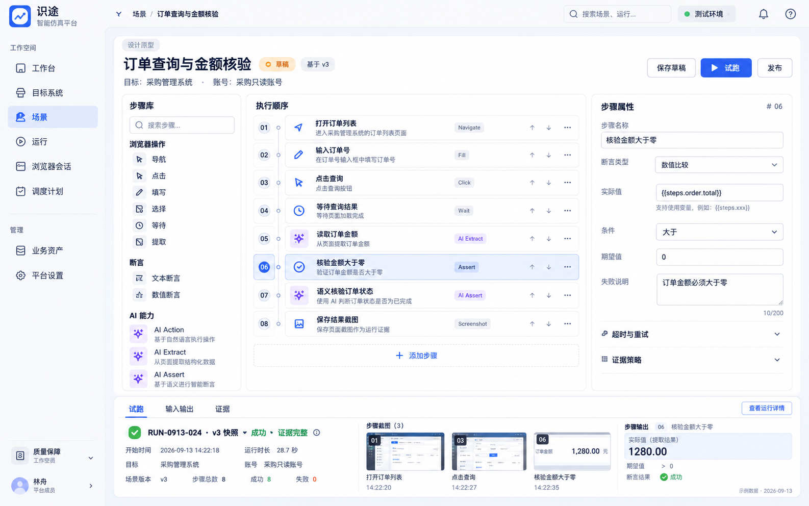
05 · 步骤编辑与页面定位核心闭环
从页面目标、输入契约与执行策略配置步骤；复杂 iframe 路径可见，参数引用无需靠脚本猜测。
查看原始 PNG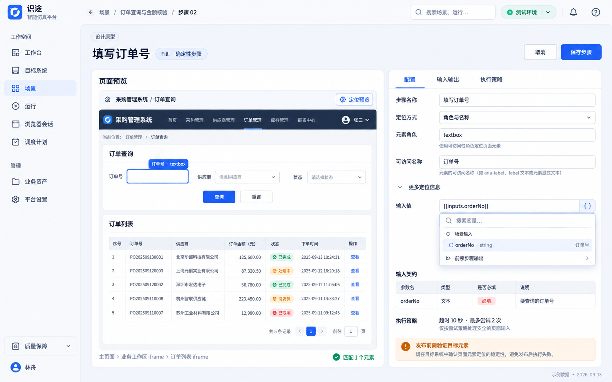
06 · AI 辅助创建与审阅核心闭环
自然语言生成可检查的步骤候选；逐项接受、编辑或拒绝，明确区分 AI Action、Extract、Assert。
查看原始 PNG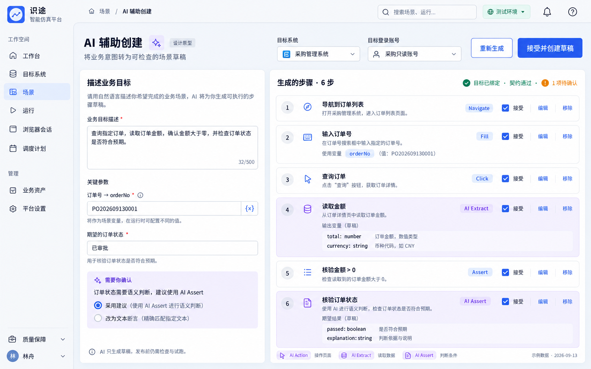
07 · 录制工作台核心闭环
把原始操作归并为业务步骤后交给用户审阅；录制结果回到 Studio，可继续编辑与试跑。
查看原始 PNG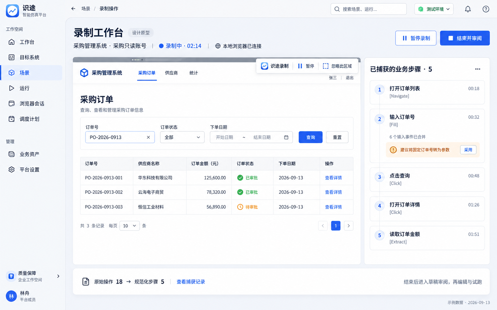
08 · Excel／CSV 导入审阅核心闭环
保留原始行到步骤的对应关系；列映射、参数和断言候选可核对，有歧义时先处理再生成草稿。
查看原始 PNG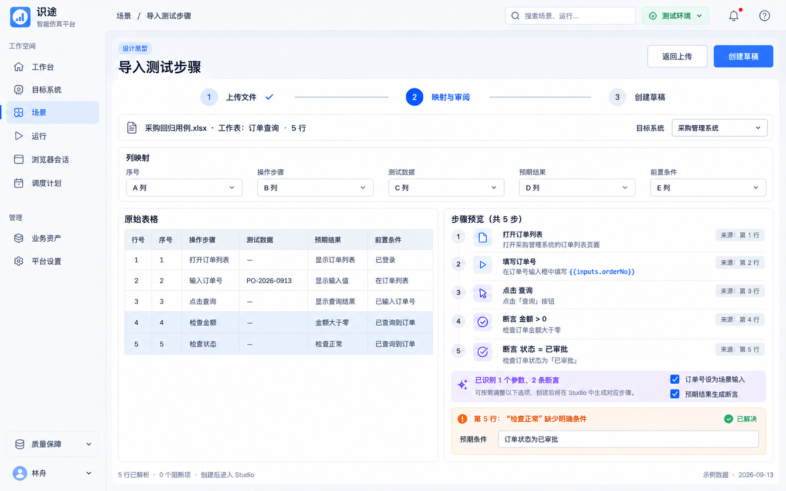
09 · 运行中心核心闭环
手工、试跑、调度共用运行列表；执行结果与证据完整性分列，认证等待和人工核查都有明确入口。
查看原始 PNG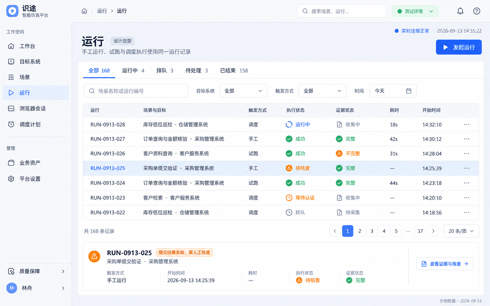
10 · 运行详情与调试核心闭环
按 Run → StepRun → Attempt 逐层定位问题；展示冻结版本、实际输出和每次尝试，避免把重试失败误判为步骤失败。
查看原始 PNG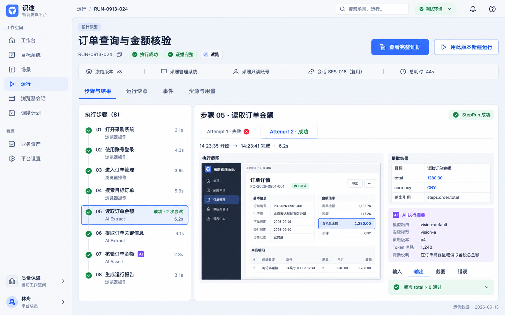
11 · 证据查看与回放核心闭环
证据绑定到步骤和尝试；截图、输入输出、错误和 AI 摘要并列可查，Trace 作为补充且保留期限可见。
查看原始 PNG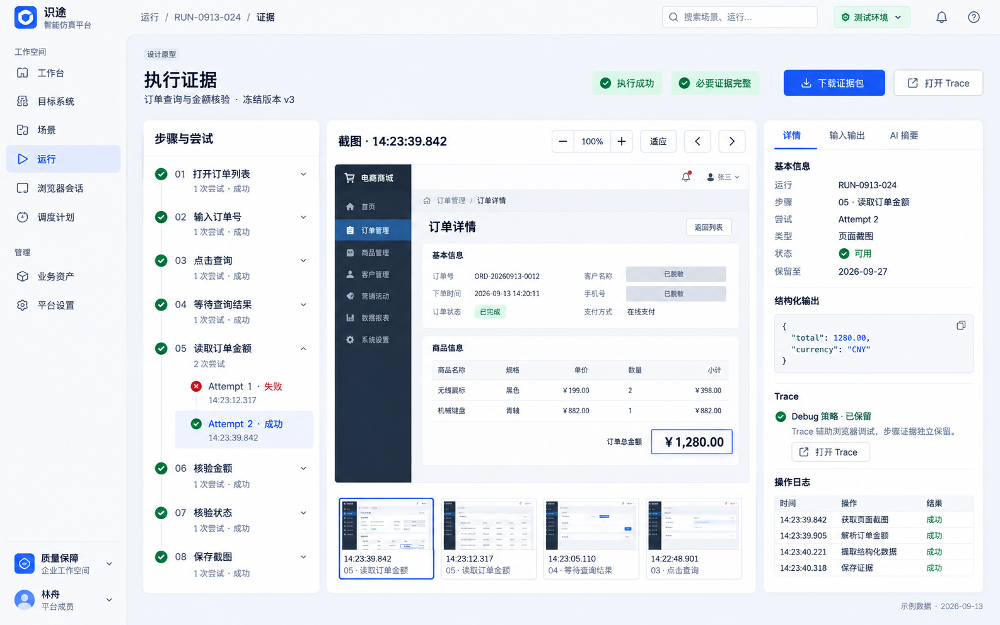
12 · 浏览器会话中心核心闭环
分别展示会话生命周期、健康状态、认证状态与当前独占使用；用户能看清复用关系和等待原因。
查看原始 PNG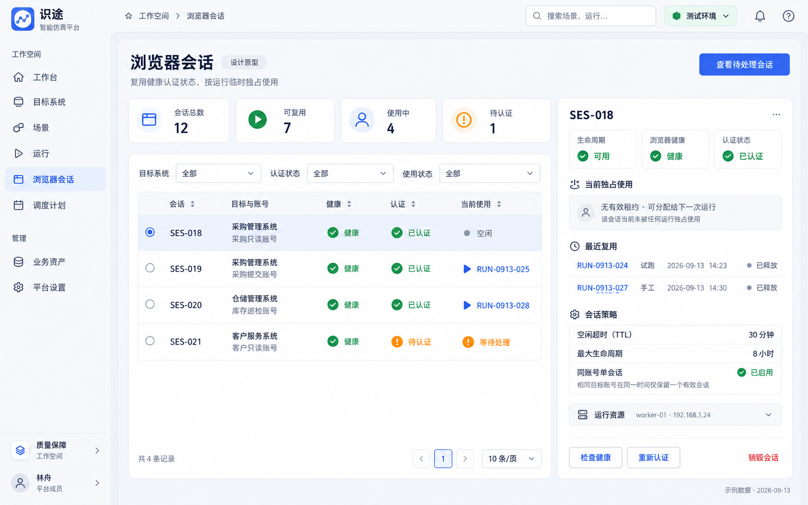
13 · 调度与巡检计划规划能力
把频率、时区、发布版本、目标账号及冲突处理放在同一计划中；触发后进入统一 Run。
查看原始 PNG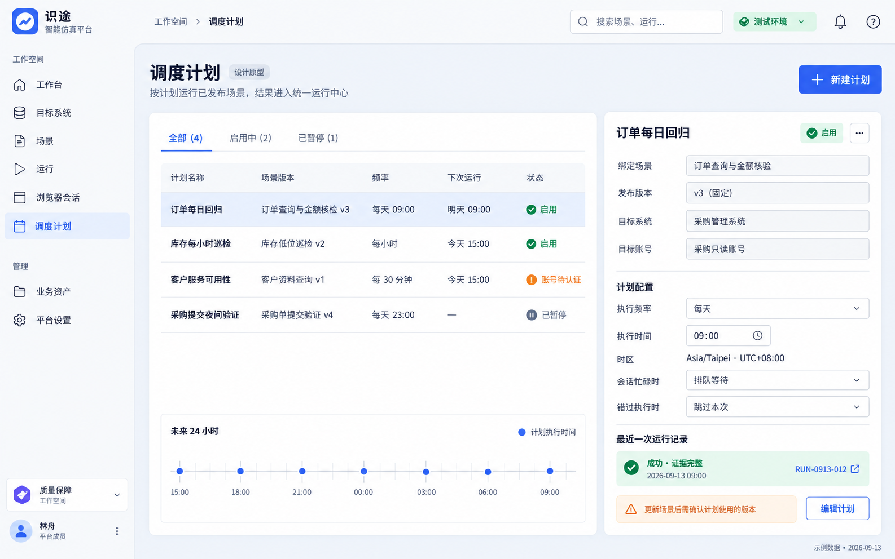
14 · 业务动作与术语库后续增强
将高频业务操作沉淀为有版本、有契约的动作；术语匹配给出候选，由用户确认引用固定版本。
查看原始 PNG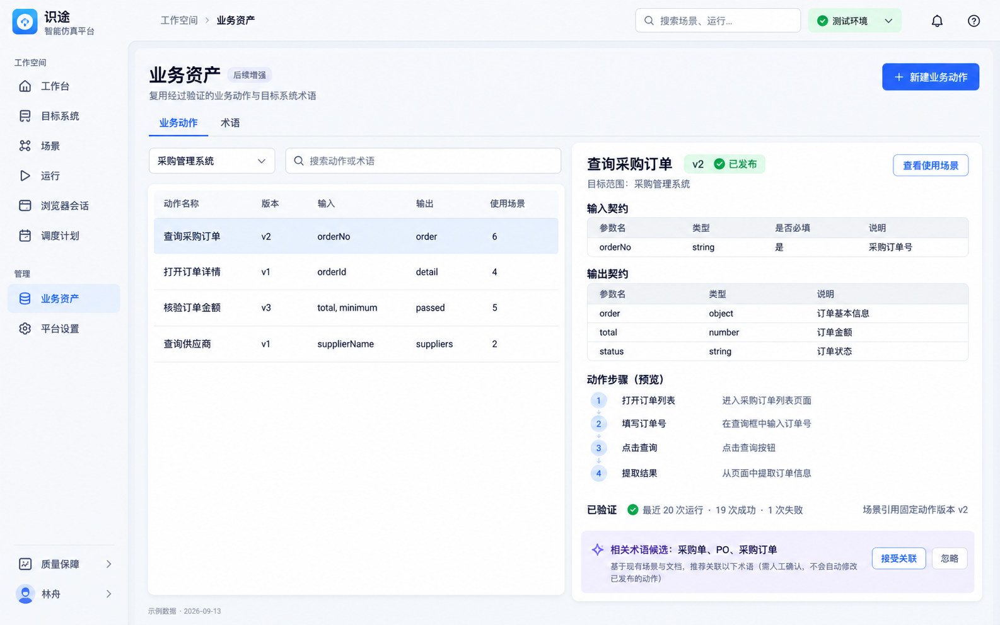
15 · 平台设置：模型路由与用量平台治理
把模型路由、只读语义、成本和策略版本放在同一治理视图；成员、权限、审计和执行资源作为同级设置入口。
查看原始 PNG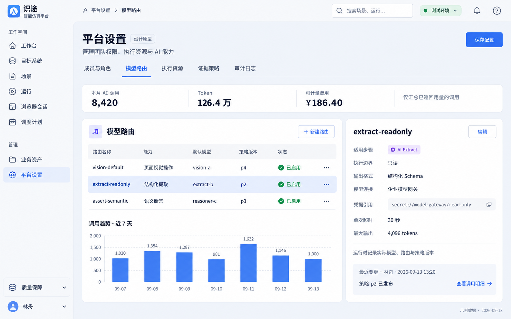